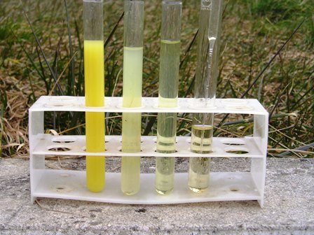

Gli etilxantati alcalini (xantogenati) sono composti derivati dal solfuro di carbonio e di formula generale
R-O-CS-S-Me dove R è un radicale alchilico ed Me un metallo alcalino
Questi composti solforati sono usati industrialmente in enormi quantità come materiale da flottazione in ambito minerario, per separare i solfuri metallici dalla ganga.
Una reazione abbastanza insolita in chimica analitica classica è l'impiego dell'etilxantato di potassio CH3-CH2-CS-SK nell'analisi del rame, vista la sensibilità verso questo metallo; tuttavia di solito non si sfrutta questa reazione per la ricerca del metallo ma si fa l'opposto: si usa un sale di rame per la ricerca del solfuro di carbonio nei gas, dato che questa sostanza anche in tracce genera xantato se fatto reagire con idrossido di potassio alcoolico.
Per il test del rame e di altri metalli ho usato l'etilxantato di potassio, un sale giallo-arancio solubilissimo in acqua, dove facilmente idrolizza emanando uno spiacevole profumo di solfuro di carbonio.

Con una soluzione al 5% di etilxantato ho provato la sensibilità specificamente col rame e successivamente (visto l'esito) anche con altri metalli che mi venivano sottomano. Le soluzioni rameiche sono consistite in diluizioni successive, partendo dall'esigua quantità di 0,1 g/l di CuCl2 e a scalare a decadi di 0,01 - 0,001 g/l.
Nell'ultimo caso si capisce che la quantità di rame è veramente piccola per analisi classiche di questo tipo (nel mio lab niente apparecchi con la spina!
Si produce subito un precipitato bruno di xantato rameico, che rapidamente passa a giallo per riduzione a rameoso ed eliminazione di Dixantogene; ecco le reazioni:
2 C2H5-O-CS-SK + CuCl2 --> Cu(C2H5-O-CS-S)2 + 2 KCl
2 Cu(C2H5-O-CS-S)2 --> 2 C2H5-O-CS-SCu + C2H5-O-CS-S-S-CS-O-C2H5 dixantogene
La fotografia si commenta da sola: l'ultima provetta a destra contiene lo xantato e la penultima 1 ppm! di rame, rivelato con un po' di torbidità senza incertezze!

Purtroppo la reazione è assolutamente aspecifica, perchè lo xantato precipita e colora con una miriade di altri metalli (anche se con minore sensibilità); ho sottoposto a questo interessante reagente anche i seguenti, senza fare diluizioni accurate, ma solo per prova:
- Piombo, marrone rossastro
- Stagno, giallastro
- Manganese, rosso scuro
- Cobalto, nero
- Nichel, marrone scuro
- Ferro, nero
- Cadmio, giallo
- Argento, marrone rossastro
- Mercurio, verdastro
Una curiosità chimico-pratica: un parente stretto del reagente di cui sopra si ottiene facendo reagire il solfuro di carbonio con la cellulosa in presenza di idrossido di sodio: si forma xantato di sodio cellulosa, che trattato con acido solforico dà origine al rayon viscosa (importante fibra tessile), oppure al cellophane (per i nastri adesivi).
La chimica e la sua utilità è entrata ancora una volta in casa!